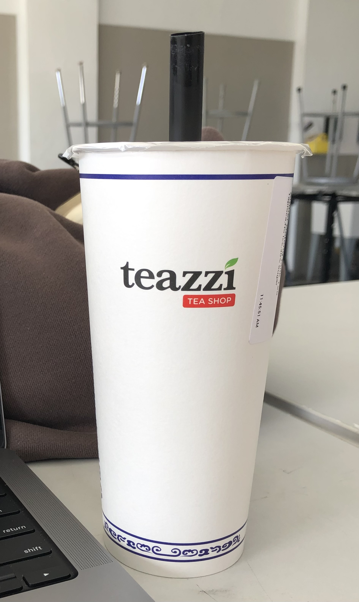
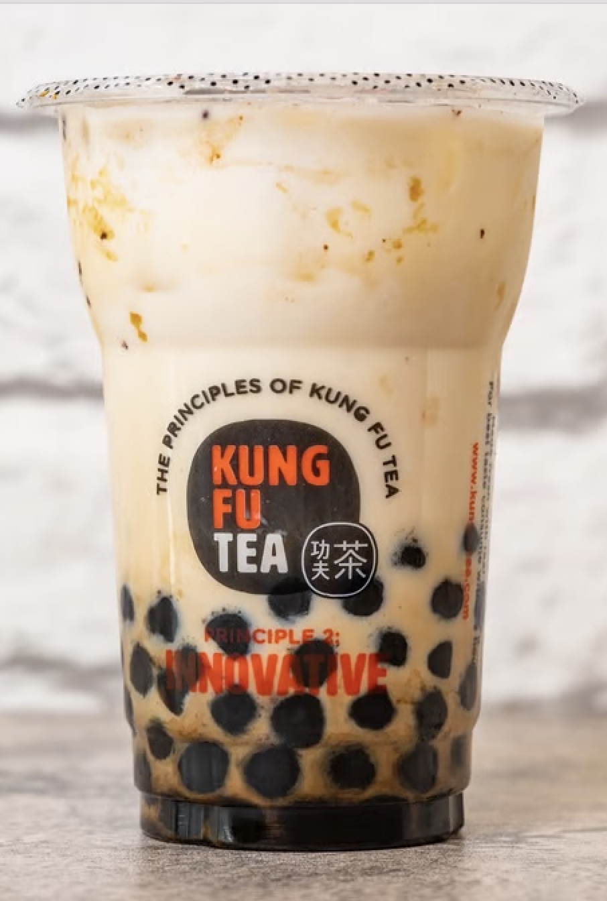
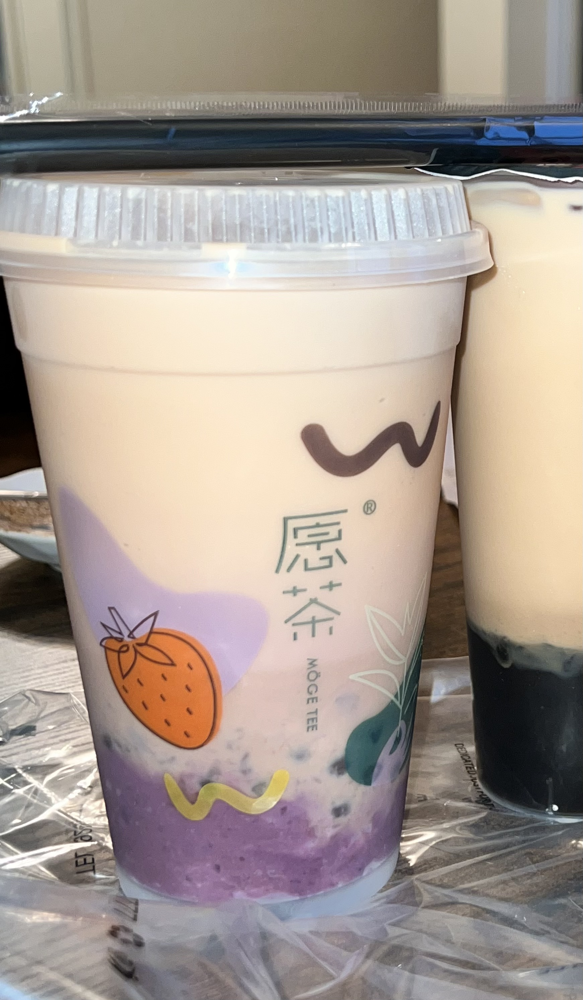
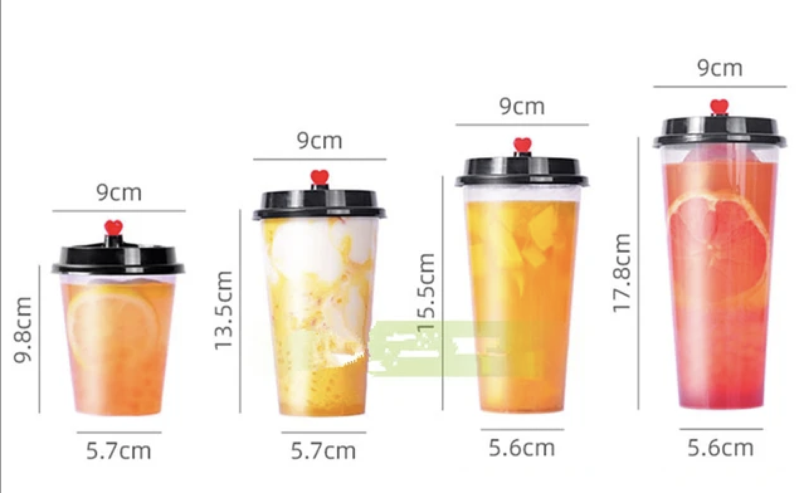

With cups from a few bubble tea brands, I collected some data.
A
Whereas
Lastly, a
Considering the design elements of Bubble Tea, it includes:

- height & diameter
- volume
- cup material
- sealing material
- logo placement
- straw color and material
- taste
- price
• height & diameter



After researching, I found that the height of a standard bubble tea cup can vary depending on the size and style of the cup used by different bubble tea shops and regions.
A typical bubble tea cup tends to range in height from 6 to 8 inches (15 to 20 centimeters).
Whereas a typical bubble tea cup tends to have a diameter ranging from 3 to 4 inches (7.5 to 10 centimeters) at the top opening of the cup.
Together, the variables of a cup's height and diameter also contribute to a consumer's enjoyment as it balance the amount of toppings and tea in each sip.

In the next entry, we will talk about the